de Aventuras

Saímos de Rolim juntos pela primeira vez, ainda meio sem acreditar que aquilo tava acontecendo de verdade. O coração acelerado, as malas prontas e aquela sensação boa de que alguma coisa especial tava começando.
A viagem até Cuiabá virou nosso aquecimento. A gente conversou sobre tudo e nada ao mesmo tempo, riu de coisas bobas e ficou trocando aqueles olhares que falavam muito mais do que qualquer palavra.
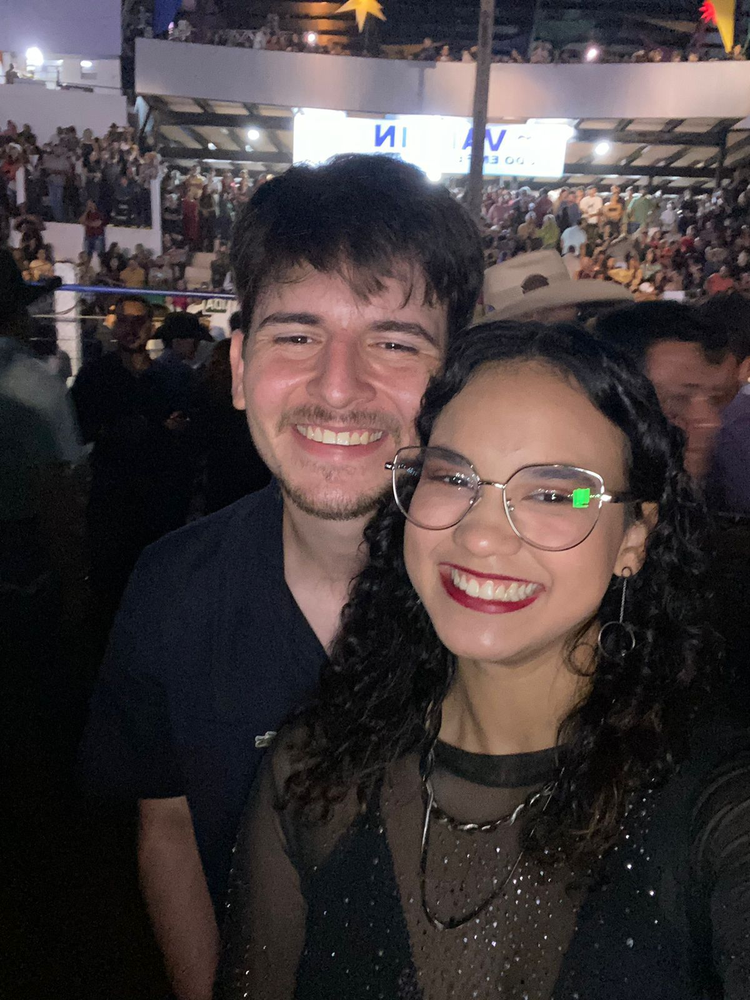
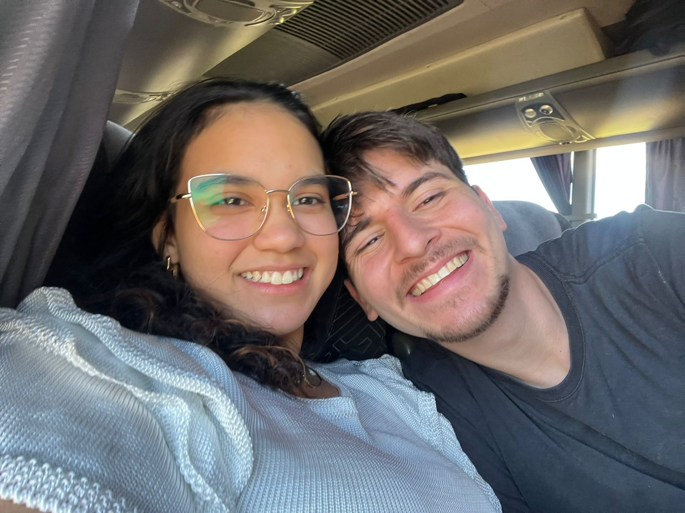
Depois de algumas horas de estrada passando por Itamarati, o sono já começava a bater, mas a vontade de aproveitar cada segundo juntos era maior. Entre conversas aleatórias, músicas tocando baixinho e risadas sem sentido, a viagem foi ficando cada vez mais especial.
A verdade é que, antes mesmo de chegar em Cuiabá, eu já tinha percebido que o melhor da viagem nem era o destino… era estar com você.
Quando chegamos em Cuiabá, parecia que a viagem tava começando de verdade. A gente desceu cansados da estrada, mas ao mesmo tempo animados, falando toda hora sobre como seria quando finalmente chegássemos no nosso destino.


Antes de ir pro aeroporto, a gente ainda passou no shopping pra matar o tempo juntos. Andamos sem pressa, comemos alguma coisa e aproveitamos aqueles momentos simples que acabam virando lembranças enormes depois.
Nosso primeiro voo juntos foi daquele jeito que a gente sonhava. Tiramos um monte de fotos, gravamos vídeos, rimos de coisas bobas e ficamos o tempo todo olhando pela janela como duas crianças vivendo algo novo.
O melhor era saber que a gente tava vivendo aquilo lado a lado. Entre uma foto e outra, conversas baixinhas e aquele friozinho na barriga da viagem, o voo passou rápido até demais.
E enquanto Salvador ia chegando cada vez mais perto, a animação só aumentava. Parecia que a nossa aventura tava finalmente começando de verdade.


A conexão em Brasília acabou virando uma lembrança engraçada da viagem. A gente ficou esperando um tempão no aeroporto, andando de um lado pro outro, tentando passar o tempo e rindo do cansaço que já começava a bater.
No meio disso tudo, apareceu o Superman por lá… e claro que eu fui tirar foto. Foi uma coisa simples, aleatória e até meio boba, mas acabou deixando aquele momento mais divertido.
Essas horas “sem fazer nada” acabaram sendo especiais também. Porque no fim, não era só sobre chegar no destino — era sobre viver cada pedacinho da viagem juntos.
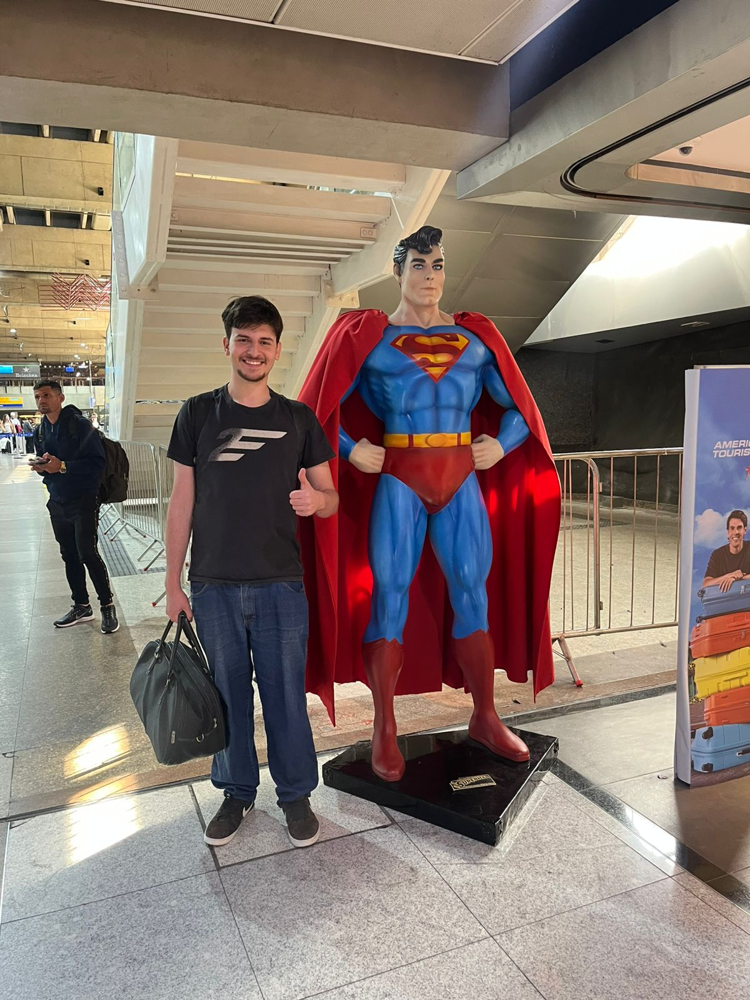
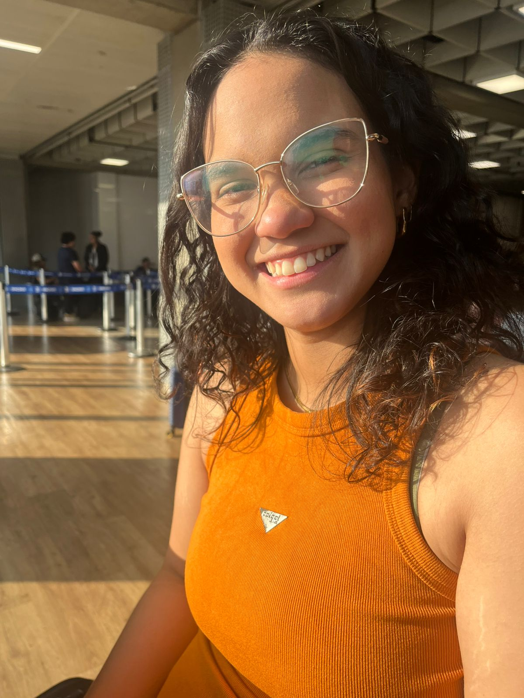
O avião pousou e Salvador nos recebeu com todo o seu calor. A brisa vinha do mar e carregava sal, sol e promessas. Olhamos um para o outro e sorrimos sem precisar dizer nada. Chegamos.
A cidade mais bonita do Brasil nos aguardava. E nós, de mão dada, fomos ao seu encontro.
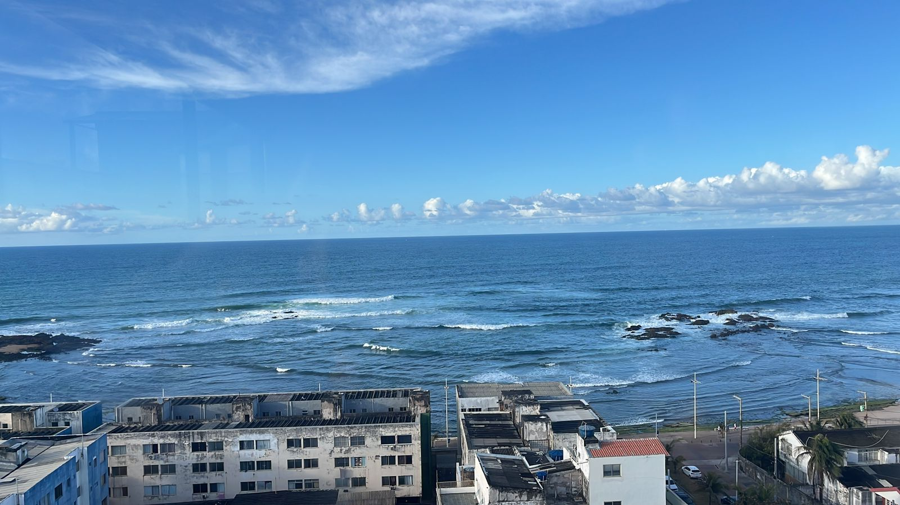

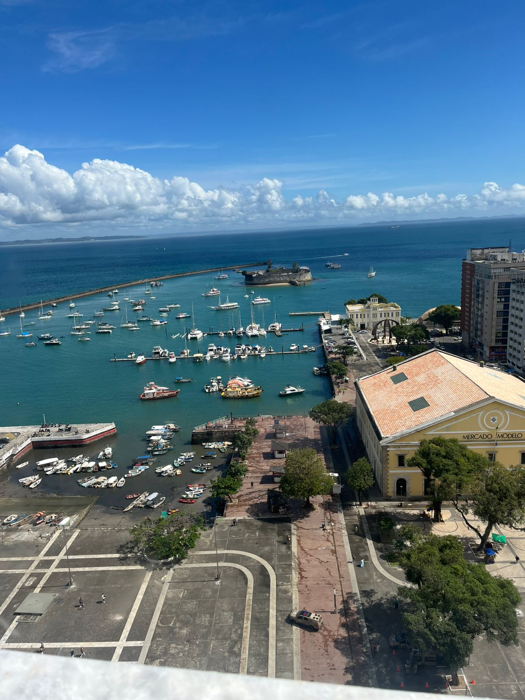
Você sempre teve vontade de conhecer a Bahia, a terra do seu pai, e estar ali finalmente vivendo isso junto com você deixou tudo ainda mais especial. Parecia que cada detalhe da cidade tinha um significado diferente pra você. Assim que saímos do aeroporto, sentimos o calor, a brisa diferente e aquela sensação boa de começo de aventura. A gente se olhou, sorriu sem falar nada e seguimos de mãos dadas, animados pra descobrir tudo que Salvador tinha guardado pra nós.
O centro de Salvador parecia um labirinto cheio de vida. A gente subia ladeiras, passava por ruas cheias de história, mercados movimentados e lugares que pareciam ter uma beleza diferente em cada esquina.
No meio disso tudo, escutando “familinha de mal humor” do guia, rindo por dentro das situações aleatórias e dos comentários que iam surgindo durante o caminho. Mesmo cansados em alguns momentos, tudo parecia bonito demais pra estragar o clima.
E no fim, era exatamente isso que deixava tudo especial: andar sem pressa, se perder no meio das ruas, observar cada detalhe e viver aquela bagunça boa juntos.

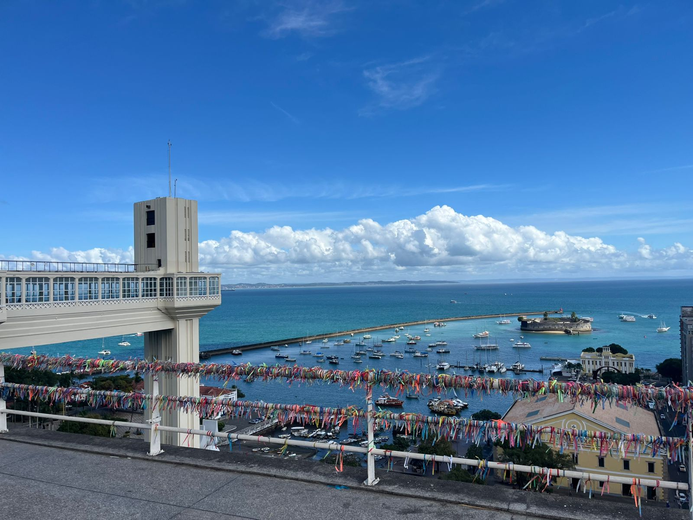


Durante o passeio, a gente conheceu museus, andou pelo Mercado Modelo e foi descobrindo aos poucos toda a cultura e a história de Salvador. Cada lugar tinha um detalhe diferente, uma música tocando ao fundo, um cheiro de comida típica ou alguma coisa que fazia a gente parar pra observar.
No mercado, caminhamos sem pressa entre as lojas, olhando artesanatos, lembrancinhas e tudo aquilo que deixava o lugar tão vivo. E claro que também aproveitamos pra experimentar a comida local, sentindo de verdade os sabores da Bahia pela primeira vez.
Foi um daqueles dias simples, mas que ficam marcados justamente pelos pequenos momentos: andar juntos, descobrir coisas novas e viver tudo intensamente.
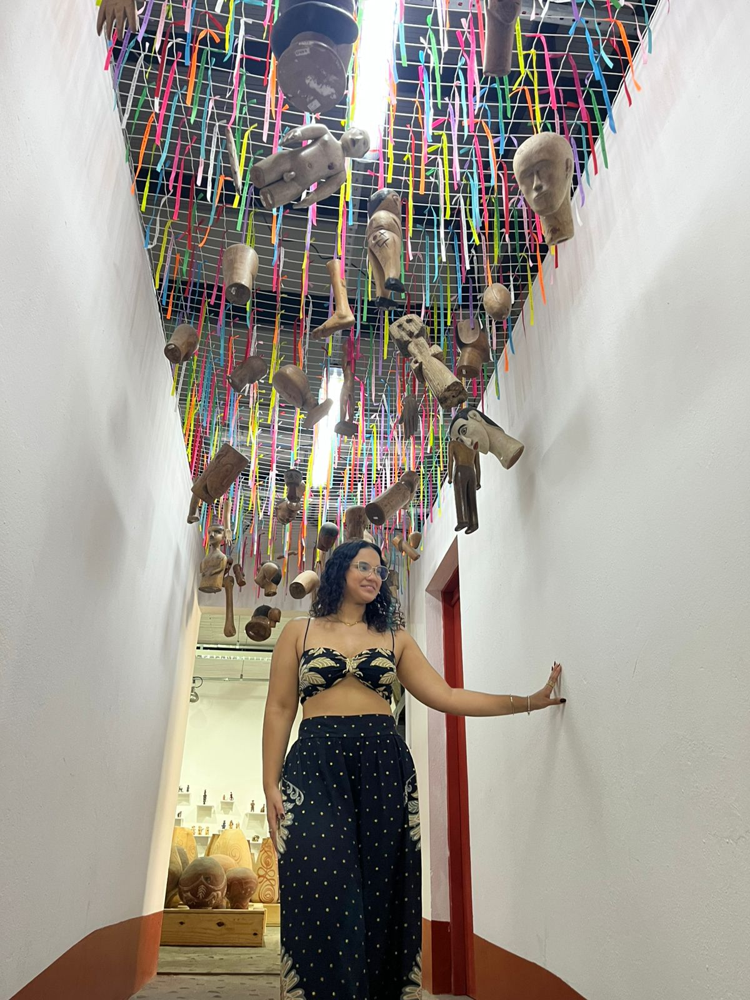

Um dos lugares que mais chamou atenção foi o Elevador Lacerda. Além de toda a história e do movimento de turistas por todos os lados, a vista lá de cima era simplesmente absurda. A Baía de Todos os Santos parecia não ter fim, cheia de barcos, cores bonitas e aquele vento gostoso vindo do mar.
A gente ficou um tempo só observando tudo, tirando fotos e aproveitando o momento. Salvador inteira parecia viva ali embaixo — cheia de música, gente, história e cultura em cada canto. Era impossível não ficar impressionado com tudo aquilo.
E quanto mais a gente conhecia a cidade, mais dava vontade de continuar explorando cada pedacinho dela.
O Pelourinho parecia cenário de filme, cheio de cores, música e vida pra todo lado. Os casarões antigos, as ruas de pedra, o som vindo dos bares e das janelas… tudo deixava o lugar com uma energia impossível de explicar.
E você ali no meio de tudo aquilo tava simplesmente a cara da Bahia. Parecia que combinava perfeitamente com o lugar, com o clima, com as cores e com aquela alegria leve que Salvador tem. Eu olhava pra você e parecia que a cidade inteira fazia ainda mais sentido.
A gente caminhou devagar pelas ruas, tirando fotos, ouvindo música e aproveitando cada segundo daquele momento que, sinceramente, parecia bom demais pra acabar.
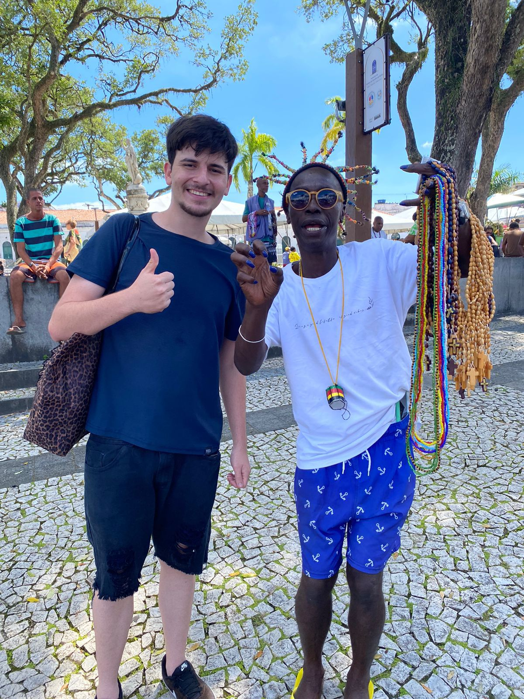


Ir pra praia juntos pela primeira vez foi uma daquelas coisas simples que acabam virando memória pra sempre. A gente entrou no mar rindo, sentindo a água quente da Bahia e aproveitando aquele momento como duas crianças felizes por estarem vivendo tudo aquilo lado a lado.
Passamos o dia curtindo a praia, tirando fotos, caminhando na areia e aproveitando cada segundo daquele lugar lindo. E quando o fim da tarde chegou, o céu começou a mudar de cor de um jeito absurdo.
O pôr do sol parecia pintura. O céu ficou todo rosa, dourado e alaranjado refletindo no mar, enquanto a gente ficava ali sentado, só observando tudo acontecer devagar. Naquele momento, parecia que o tempo tinha parado só pra nós dois.
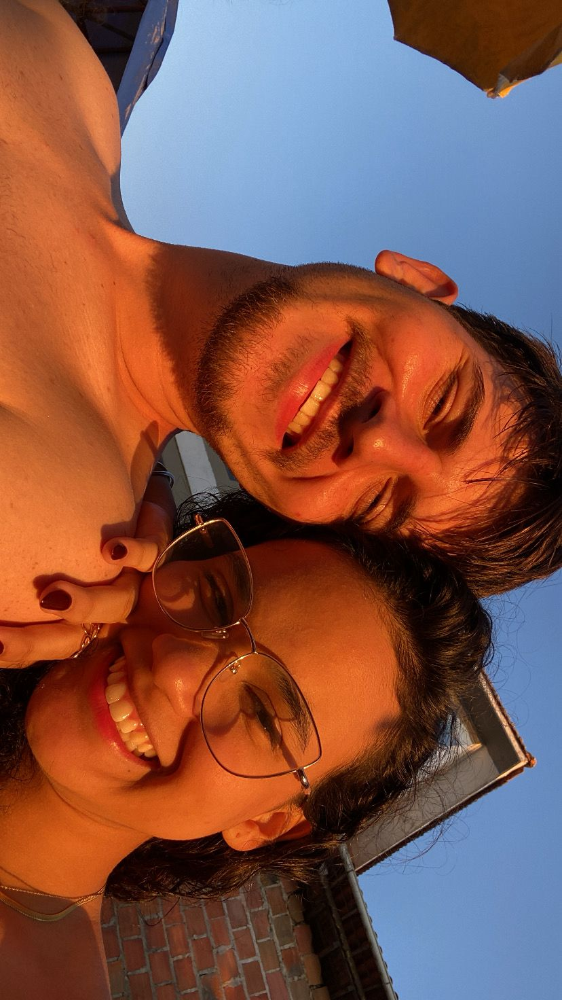

E sinceramente… assistir aquele pôr do sol com você, depois de viver um dia tão especial juntos, foi uma daquelas lembranças que eu sei que vou guardar pra sempre.
Salvador de noite tinha uma energia completamente diferente. As ruas cheias, música tocando em vários lugares, o povo animado e aquela sensação de que a cidade nunca dormia deixavam tudo ainda mais bonito.
A gente saiu sem muito plano, só querendo aproveitar a noite e descobrir o que aparecesse pelo caminho. E foi exatamente isso que deixou tudo tão divertido. Cada lugar tinha gente sorrindo, dançando, conversando alto e vivendo o momento como se não existisse amanhã.
Também aproveitamos pra experimentar várias comidas diferentes. Provamos sabores novos, comidas típicas e até polvo a gente comeu. Era engraçado ver a gente tentando descobrir se gostava ou não de algumas coisas, mas no fim tudo virava risada e história pra contar.
E entre música, caminhada, comida boa e aquela cidade linda iluminada à noite, a gente foi vivendo mais um daqueles momentos que fizeram a viagem ficar ainda mais especial.

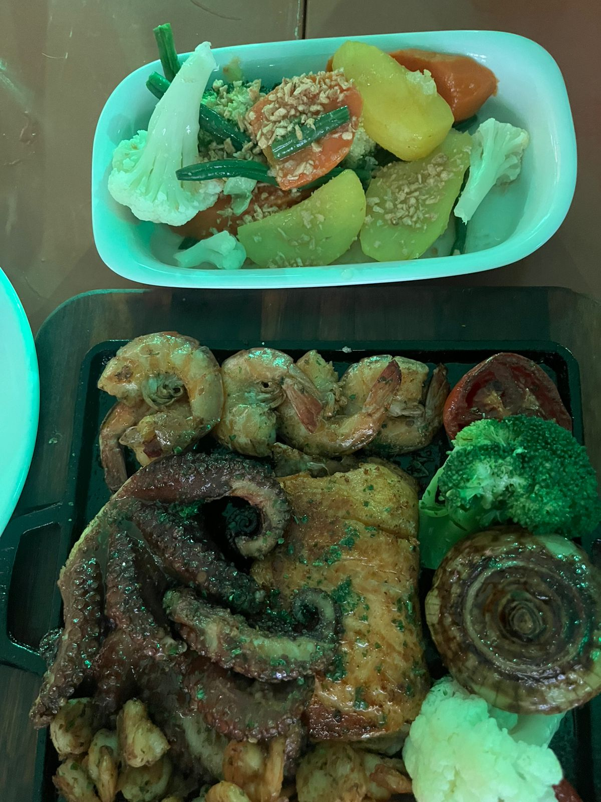
As igrejas de Salvador tinham uma beleza diferente de tudo que a gente já tinha visto. Cada detalhe parecia cheio de história, desde a arquitetura enorme até o clima de fé que existia em volta de tudo. E o mais bonito era perceber como a cidade misturava o catolicismo com o axé, com as cores, a música e toda aquela cultura baiana tão viva.
Na Igreja do Bonfim, as fitinhas coloridas espalhadas por todos os lados deixavam o lugar ainda mais especial. A gente amarrou nossos pedidos em silêncio, vivendo aquele momento simples, mas cheio de significado.
E sinceramente… você naquele lugar tava chamando atenção sem nem perceber. Parecia que combinava perfeitamente com Salvador — linda, leve e cheia de vida no meio de toda aquela mistura de cores, história e energia boa.
Foi impossível não parar alguns segundos só pra observar tudo: a igreja, a cidade, as pessoas… e você ali no meio de tudo isso deixando aquele momento ainda mais bonito.
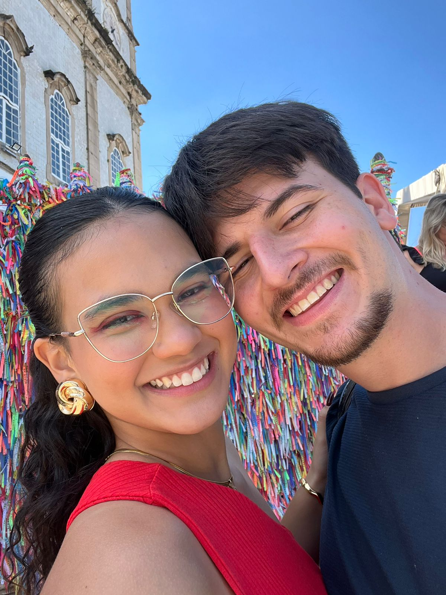
O acarajé que a gente comeu foi uma experiência por si só. Paramos num dos lugares mais duvidosos possíveis, ali do lado do “Baú”, com aquele movimento típico da Bahia acontecendo em volta, gente falando alto, música tocando e aquele cheiro forte de dendê no ar.
E o melhor era o jeito do pessoal falando. O sotaque baiano deixava tudo mais engraçado e acolhedor ao mesmo tempo. A gente quase se perdia tentando entender algumas coisas, mas acabava rindo junto de tudo.
Quando o acarajé chegou, a gente até assustou. O negócio era gigante. Muito maior do que imaginávamos. E mesmo sem saber direito como comer aquilo sem fazer bagunça, a gente foi tentando do nosso jeito, sentado ali mesmo, no meio da rua, aproveitando o momento.
No fim, acabou virando uma das lembranças mais marcantes da viagem. Porque não era só sobre a comida — era sobre viver aquela experiência do jeito mais verdadeiro possível, juntos, no meio daquela bagunça boa que só Salvador consegue ter.
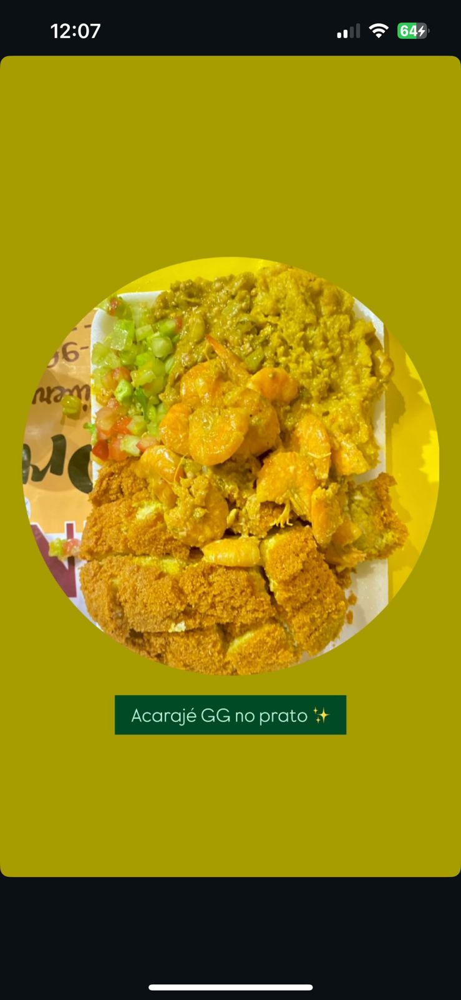
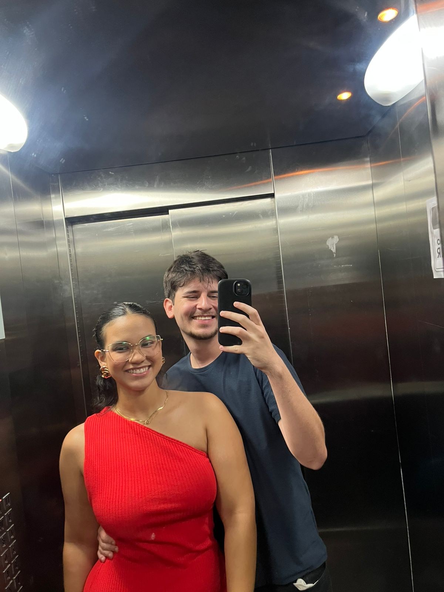
Te ver ali comigo, vivendo tudo aquilo, só me fazia ter mais certeza do quanto eu amo você. Cada momento da viagem parecia ficar mais especial simplesmente porque era ao seu lado.
E teve aquele lugar da muqueca de camarão… sinceramente, eu acho que nunca vou esquecer. O clima do lugar, a comida chegando quente na mesa, o cheiro absurdo, a gente cansado da praia mas feliz demais por estar ali. Foi um daqueles momentos simples que acabam ficando marcados pra sempre na memória.
Enquanto a gente comia e conversava sem pressa, olhando aquele mar lindo na frente da gente, eu fiquei pensando em como queria viver muitos outros momentos assim com você. Voltar naquele lugar, sentar na mesma mesa e sentir tudo de novo.
Porque no fim, por mais bonito que fosse o mar, a praia ou a viagem inteira… a melhor parte sempre era você ali comigo.
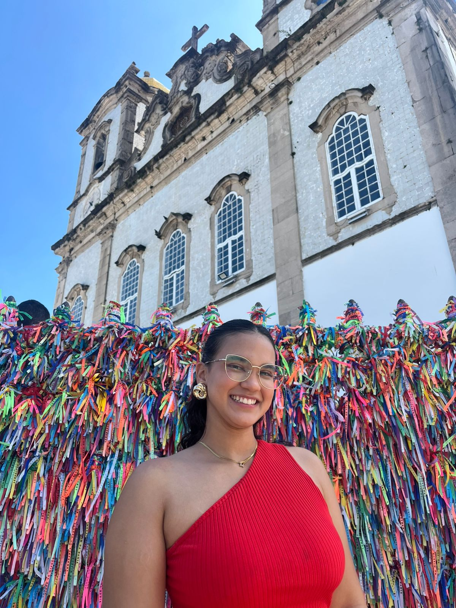


O passeio até a Ilha de Itaparica foi uma das partes mais bonitas da viagem. Ver aquele mar enorme, o vento batendo no rosto e a imensidão da Baía de Todos os Santos fez tudo parecer ainda mais especial.
Durante o caminho, a gente ficou admirando a paisagem, tirando fotos e aproveitando cada segundo daquele momento. E eu nunca vou esquecer da forma como você olhava pro mar, completamente encantada com tudo aquilo. Era impossível não parar pra te observar também.
A Ilha de Itaparica tinha aquele clima leve, tranquilo e bonito que fazia a gente querer esquecer da hora e só aproveitar. E no meio daquele cenário incrível, eu só conseguia pensar no quanto aquela viagem tava sendo perfeita por ter você comigo.
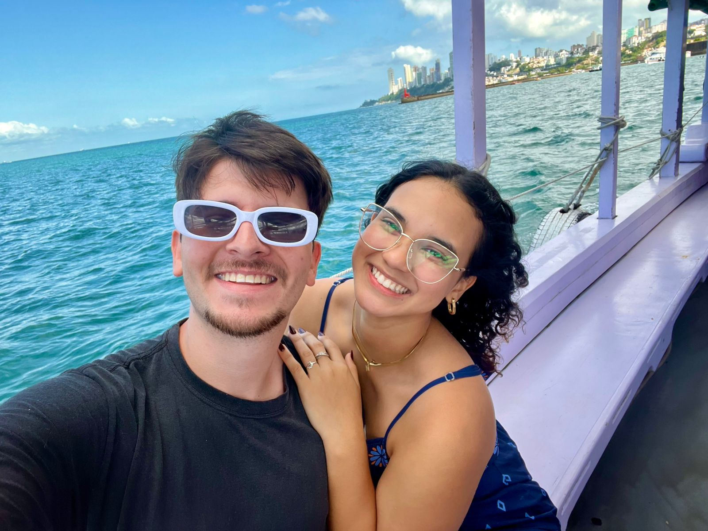

O passeio de barco saindo ali perto do Mercado Modelo foi uma daquelas experiências que parecem boas demais pra serem reais. Desde o começo já tava tudo incrível — o vento batendo, o mar lindo e aquela sensação gostosa de estar vivendo algo especial ao seu lado.
Durante o caminho até a ilha, parecia que todo mundo tava feliz junto. Música tocando, o pessoal animado e aquele clima leve que fez o passeio ficar ainda melhor. E quando começaram a cantar parabéns no barco, tudo ficou ainda mais marcante e divertido. Foi impossível não sorrir olhando pra você ali, aproveitando cada segundo.
A ilha era linda, o mar parecia piscina e o tempo simplesmente passou rápido demais. Mas acho que o que mais ficou guardado foi a sensação de estar vivendo aquilo com você. Porque qualquer lugar se tornava inesquecível quando você tava comigo.
E no fim da tarde, vendo o céu mudar de cor no meio do mar, eu só conseguia pensar no quanto aquele passeio tinha sido perfeito. Um daqueles momentos que eu queria poder reviver mil vezes ao seu lado.

.jpg)

Depois de mais um dia inteiro na praia, cansados mas felizes, a gente voltou naquele lugar da Bobó de camarão que já tinha virado um dos nossos preferidos da viagem. Comer ali de novo trouxe aquela sensação boa de “quero guardar esse momento pra sempre”.
Mais tarde, mesmo mortos de cansados, ainda fomos jogar boliche pra aproveitar nossa última noite antes da viagem de volta. E claro que tinha que acontecer alguma coisa pra virar história depois: a tal da pizza “mofada”. Na hora foi um estresse, porque ninguém merecia aquilo logo no fim da viagem, mas depois acabou virando motivo de risada entre a gente.
No final, mesmo com os pequenos perrengues, tudo ficou leve de novo. Porque era sempre assim: bastava a gente parar, conversar e rir juntos que qualquer coisa ruim perdia a importância.
E olhando pra trás, acho que essa foi a melhor parte da viagem inteira — não ter vivido tudo perfeito, mas ter vivido tudo juntos.
Quando chegou a hora de voltar pra Rondônia, bateu aquela mistura estranha de cansaço, saudade e vontade de ficar só mais um pouquinho. Parecia que a viagem tinha passado rápido demais, mesmo depois de tudo que a gente viveu.
No aeroporto, enquanto esperávamos o voo, eu fiquei lembrando de cada momento: a estrada saindo de Rolim, a conexão em Brasília, o primeiro voo juntos, as praias, o Pelourinho, a Bobó, o acarajé gigante, o passeio de barco, as risadas, os pequenos estresses e todas as coisas simples que fizeram essa viagem ser tão especial.
E no meio de tudo isso, uma coisa ficou muito clara pra mim: não era só Salvador que tinha tornado tudo inesquecível. Era você. Porque qualquer lugar ao seu lado ganhava uma sensação diferente, mais leve, mais feliz, mais viva.
Voltamos pra Rondônia trazendo muito mais do que fotos e lembranças. Voltamos com histórias que sempre vão fazer a gente sorrir quando lembrar, com memórias que eu sei que vou guardar pra sempre e com ainda mais vontade de viver o mundo inteiro ao seu lado.
Se essa viagem teve uma certeza, foi essa: os melhores momentos da minha vida sempre vão ser aqueles em que eu estiver com você.